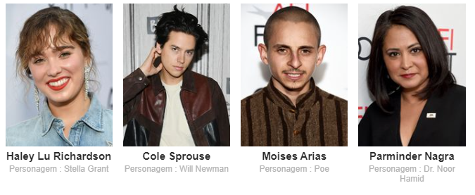
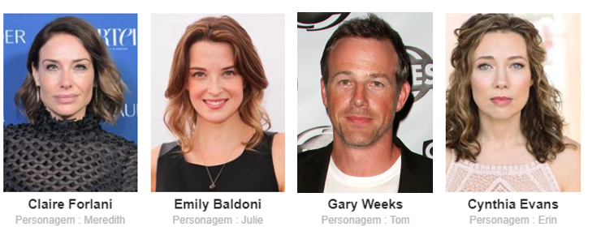
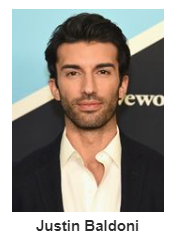

┄ ELENCO ┄
 
┄ DIREÇÃO ┄

┄ OUTRAS INFORMAÇÕES ┄
ESTÚDIO:CBS Films, PARIS FILMES
TRILHA SONORA: Brian Tyler, Breton Vivian
FOTOGRAFIA: Frank G. DeMarco
┄ CRITICAS DA IMPRENSA ┄
CineClick (por Thamires Viana):Peca pelo excesso de clichês já comuns em romances teen. [...] Mas podemos perdoar se o analisarmos como um filme feito para emocionar o grande público e lotar as salas de cinema, levando em conta ainda o chamariz que é Sprouse.
Observatório do Cinema (por Aléxis Perri): Apesar de alguns diálogos proféticos e descritivos, é possível atar este laço de empatia com o sofrimento destas personagens. Ainda mais pela perspectiva de Stella, pois a jovem moça que se encontra no alto de sua juventude se mostra vibrante e cheia de energia.
New York Times (por Ben Kenigsberg):A Cinco Passos de Você é melhor feito do que a sinopse sugere. [...] Haley Lu Richardson, que já apresentou boas performances antes, e agora cimenta seu status genial ao encontrar profundidades além do roteiro planejado.
O Globo( por Marcelo Janot): Tamanha implausibilidade é tratada de maneira natural. Só assim, forçando a barra com o hospital negligente e pais estranhamente ausentes, que os roteiristas conseguem desenvolver a história romântica de Stella e Will. O talento da atriz Haley Lu Richardson faz o filme parecer menos ruim.
a